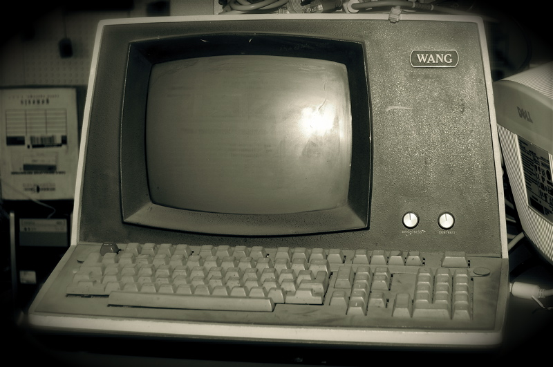
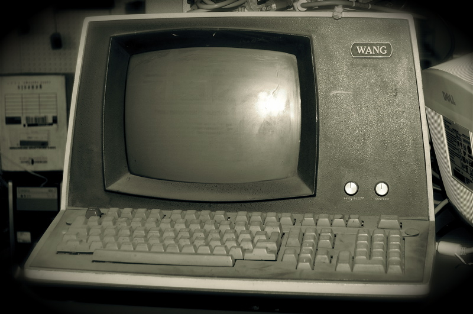

| Go back to home page | Computer Evolution | My Computer |
|---|---|---|
 |
 |  |
Computers need a lot of components for it to work. There is a list below that shows all the parts that a computer requires
The CPU (Cetral Processing Unit) is like the brain of the computer, it helps the computer to run the components properley. it connects to the mother board with pins.

The mother board where all the computer parts are connected to. It also has external ports for usb, audio, lan cable and many more others. Some mother boards also support wifi and bluetooth.

The RAM (Random Access Memory) stores short term memory. For example: google chrome tabs. Onces your done with the task (google chrome) it earses all the memory you have used

There are 3 main types of storages used today they are HDD, SSD and NVME M.2. They are not all the same the NVME is the newest type of storage which is faster and smaller the older once where big and slow. it stores the operating system and everything you install.
The GPU(Graphics Processing Unit) or Graphics Card isnt essantial for everyone. People who have a graphics card either use it for gaming or redering 3D objects. People have also used the newer models of graphics cards for crypto mining.
The power supply helps power the motherboard, Then the mother board helps power most the other component. Newer models of GPU's are powerfull so they are connected direclty from the power supply

Once you have connected all the components you will need to put them inside a case. You will need a proper airflow and cooling inside the case so the componets dont heat up. For fans shouold be enough but for the CPU you will need to apple a paste called thermal past and a special fan for it cause the cpu gets real hot when the computer is on. However there is another option and its called water cooling where the componects like the cpu and gpu are cooled with water thats runs thru a radiator that keeps the water cool at all time.
| Go back to home page | Computer Evolution | My Computer |
|---|---|---|
|
 | |